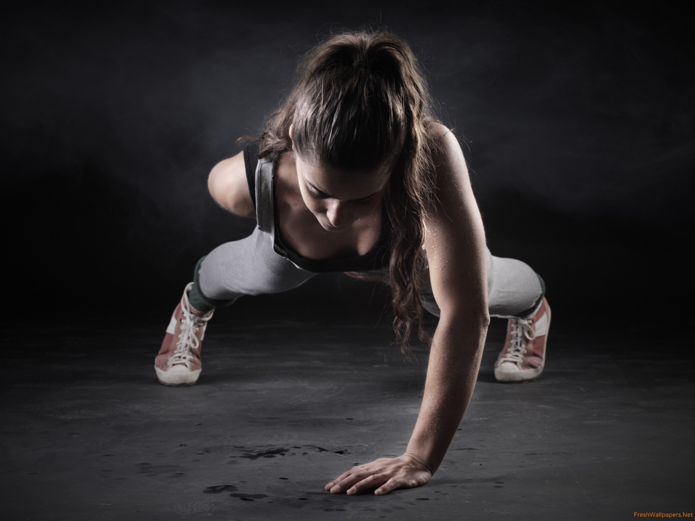

ABS
Arm toning and strengthening exercises are important throughout life, says Dan Agresti, exercise physiologist and owner of ProActive Health and Fitness in Denver. And the benefits go way beyond looking good in a tank top. Life is a lot better when you're strong," says Agresti. "It's fun to know I can do just about any task.
Shoulder
Stronger Bones. An important benefit of the shoulder press exercise as well as any other strength-training exercise is increased bone strength. During the lift, the load placed on your bones by the weights stresses them and causes them to adapt, just like your muscles.
Legs
Squats, for example, engage your quads, hamstrings, glutes, inner and outer thighs, of course, but they also really activate your core! Additionally, lower body exercises get your heart rate up as well for a bit of cardio while strength training — a real time-saver.